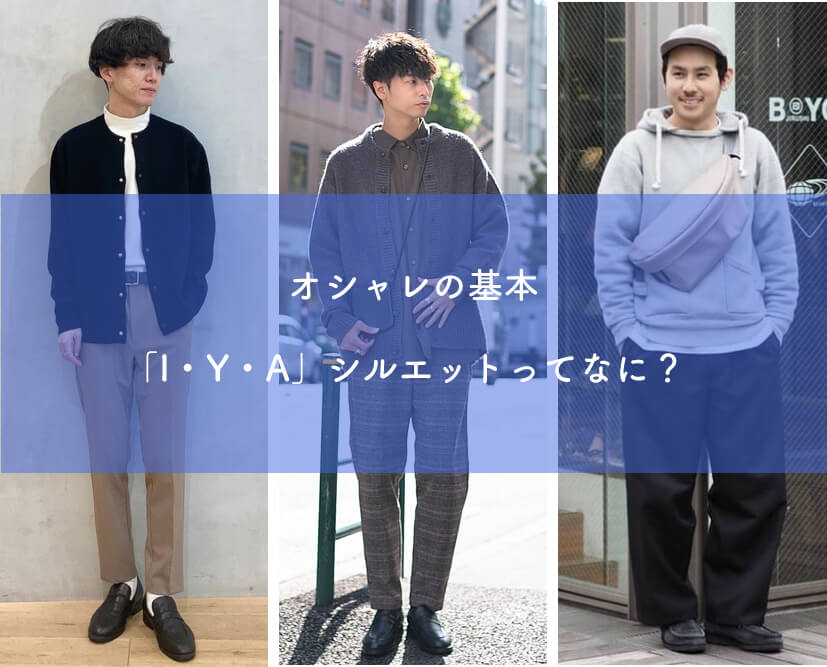
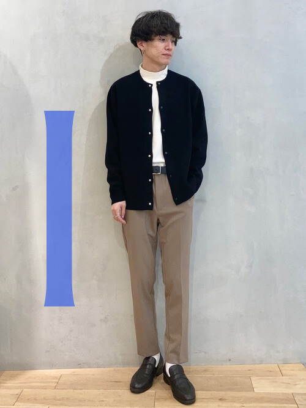
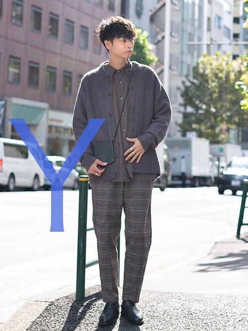
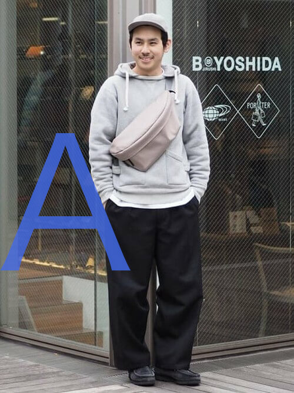
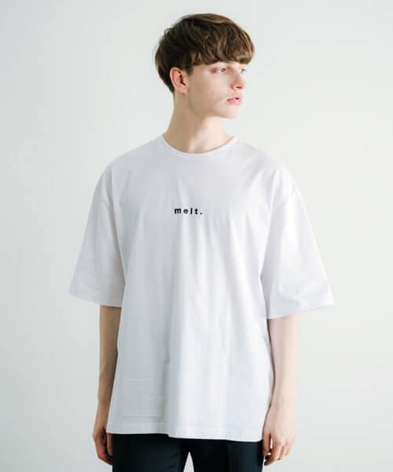
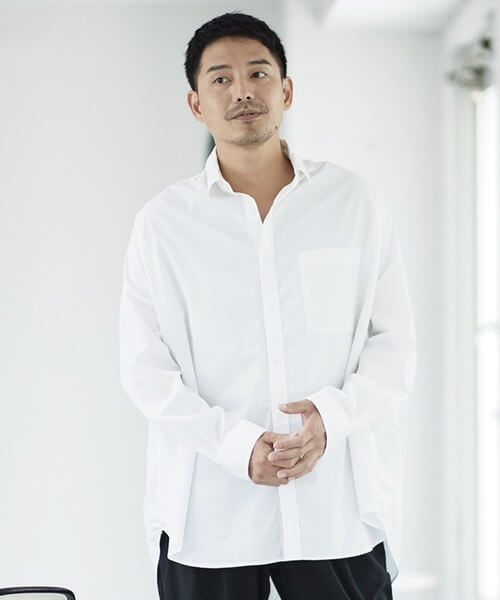
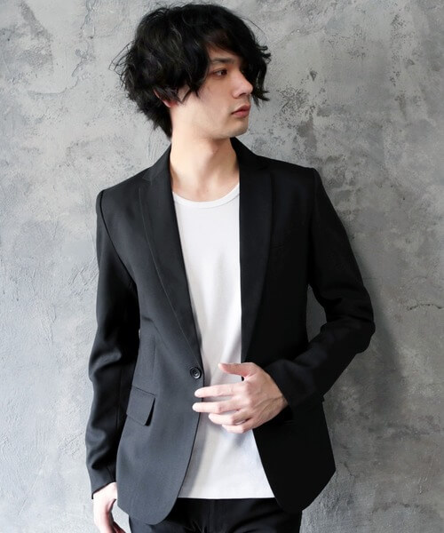
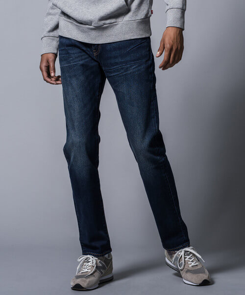
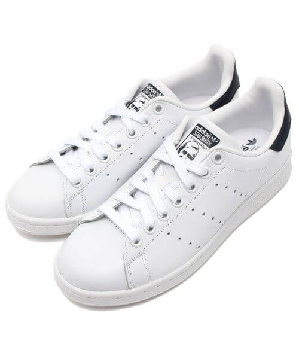

よみもの
よみものとは？
シルエット、着まわし術に関する
お得な情報が詰まっています。
おしゃれの基本「シルエット」
を知るだけで人生が変わる！？

ファッションにおけるシルエットとは、いわゆる服を着た時の外枠・輪郭のことです。
まずは基本的なシルエットを3つご紹介します。
-
Iラインシルエット
アルファベットのI（アイ）のように細いIラインシルエット。
3つのシルエットの中でも特にシンプルで、スーツスタイルとも同じなので、スマートな印象が特徴です。
身長を高く見せるファッションテクニックの一つです。 -
Yラインシルエット
上半身にボリュームがあり、下半身は細身にまとめるYラインシルエット。
大人っぽさが生まれる上に、周りを隠し、華奢な体やぽっちゃりなど、体型の悩みなどカバーしやすいシルエットです。
-
Aラインシルエット
上半身は細身、下半身はワイドパンツのような太さのあるアイテムで作るAラインシルエット。
どしっとした印象があり、男らしさのあるコーディネートを作りやすいです。
すぐに使える着回し術
少ない服で着回すポイント
- 基本アイテムは着まわしのきく定番ものを厳選
- 組み合わせのバリエーションをたくさん作っておく
- 小物や着こなしワザでアレンジする
I・Y・Aラインシルエットのアイテムを揃えておいて、組み合わせ（着回し）やアレンジで印象を与えます。
次のルールに従ってアイテムを厳選し、ワードロープを構成しましょう。
ファッションに苦手意識がある人には「着回し」は難しいテクニックのように思えるかもしれませんが、
最初から着回し安いアイテムを厳選しておけば、難しくない！
- シンプルなデザイン
- 無地
- 基本色（黒、ネイビー、白、カーキ）
- 定番アイテム
持っておくべき主力服
少ない服で着回す前提として、入手する服の系統をきれいめにしぼりましょう。
『きれいめ』は他人の目線や評価を重視した、きちんと感のある服装というイメージです。
ここでは、着回しやすくきれいめな服をご紹介いたします!
-
①Tシャツ
Tシャツは基本中の基本アイテム。
ZOZOTOWNで見る
無地のものを選べばオールシーズン使えます。
夏は一枚で着て夏以外はインナーとして着られます。
色は基本色を使いましょう。 -
②白シャツ
清潔感があって高い好感度をキープできるのが襟付きの長袖白シャツです。
ZOZOTOWNで見る
誰にでも似合うし組み合わせがしやすい、万能アイテム！ -
③ジャケット
きちんとした格好が要求される場面での、軽めのアウターとして便利なジャケット。
ZOZOTOWNで見る
スタイルが良く見えて女子受けもいい。 -
④デニム
カジュアルボトムス定番の綺麗めなインディゴブルーをおすすめします。
ZOZOTOWNで見る
合わせ方次第で上品に！ -
⑤白スニーカー
カジュアル派には外せないスニーカー。
ZOZOTOWNで見る
白スニーカーならNGな組み合わせもほぼないため毎日履くことができる。
まとめ
感覚が掴めてきたら、自分で一からコーディネートをしてみましょう。
ファッションはとても奥深いものです。さまざまな着回しにチャレンジしてファッションを楽しみましょう！